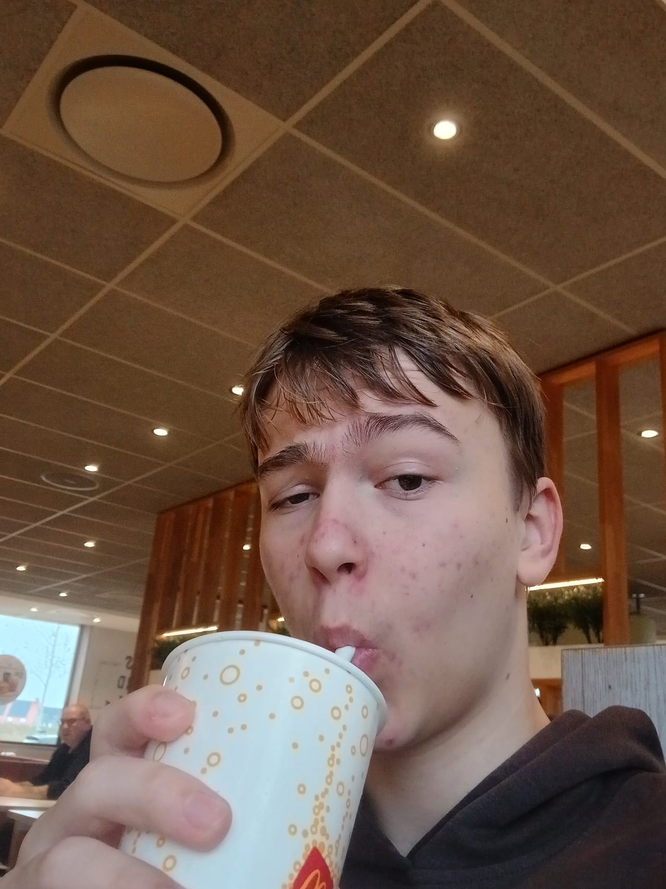
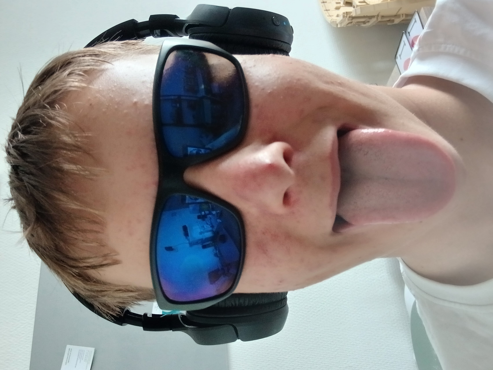

Welkom bij mijn website
Hallo, ik ben Matthijs, welkom bij mijn website.
Waarom ict?
Ik kies voor HBO ICT omdat ik op de middelbare school Informatica altijd al heel leuk vond en er ook best goed in was. Ik merkte dat ik het fijn vond om met computers en technologie bezig te zijn , vooral als ik puzzels moest oplossen of nieuwe programma’s maakte. Het leek me toen al interessant om daar verder in te leren. De HBO-opleiding ICT spreekt me aan omdat je niet alleen de theorie leert, maar ook echt praktijkervaring opdoet. Zo kun je bijvoorbeeld werken aan echte projecten, en dat vind ik heel belangrijk. Bovendien biedt de ICT-wereld zoveel verschillende mogelijkheden, van softwareontwikkeling tot cybersecurity, dat er altijd wel iets nieuws is om te ontdekken. Ik wil mijn interesse en talent verder ontwikkelen en uiteindelijk werken in een vakgebied waar veel vraag naar is. Daarom is HBO ICT voor mij de perfecte keuze.
 